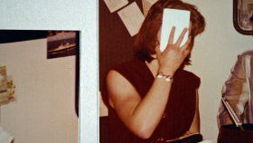

Schicht
Shift
Alex Gerbaulet
Deutschland 2015
19 min – HD – dt. OmeU
B: Alex Gerbaulet – K: Alex Gerbaulet, Smina Bluth – T: Tom Schön – S: Philip Scheffner – Erzählerin: Susanne Sachsse – P: Merle Kröger
First Film Award 26. FID Marseille, Bester deutscher Film 61. Kurzfilmtage Oberhausen
www.alexgerbaulet.de
Abrechnung und zugleich Spurensuche nach der (eigenen) Vergangenheit. Schicht für Schicht enthüllt der Film das Porträt einer Familie und begibt sich auf einen schwindelerregenden Trip durch die schrumpfende Industriestadt Salzgitter.
mittwoch 14 okt 18.30 uhr werkstattkino
Interview mit Alex Gerbaulet bei den 61. Kurzfilmtagen Oberhausen:
Alex Gerbaulet geb. 1977, lebt und arbeitet als Künstlerin, Filmemacherin und Kuratorin in Berlin. Studium der Philosophie, Medienwissenschaften und Freien Kunst (bei Birgit Hein) in Braunschweig und Wien. Künstlerische Mitarbeiterin an der Hochschule für Bildende Künste Braunschweig, 2012-2014 künstlerische Mitarbeiterin von Bjørn Melhus an der Kunsthochschule Kassel. Seit 2014 arbeitet sie als Produzentin bei pong film GmbH Berlin.
Film (Auswahl) Über Land 2002, Datterode 2006 – Gefangenenbilder 2007 – Schon Nachmittag 2009 – Schicht 2015